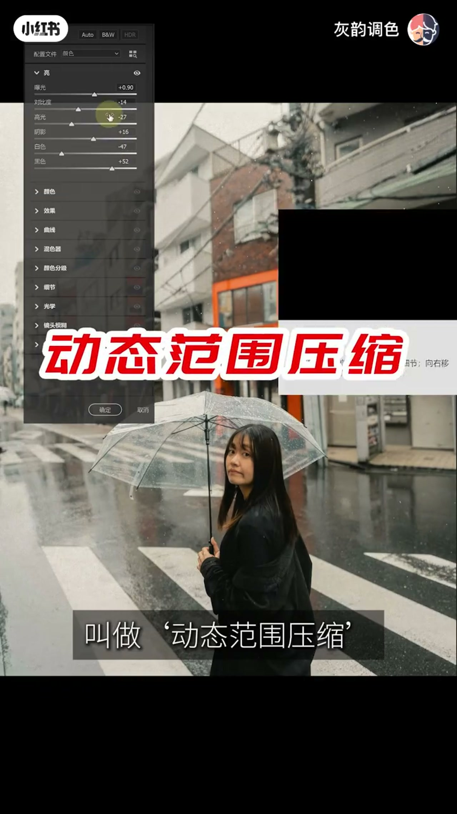
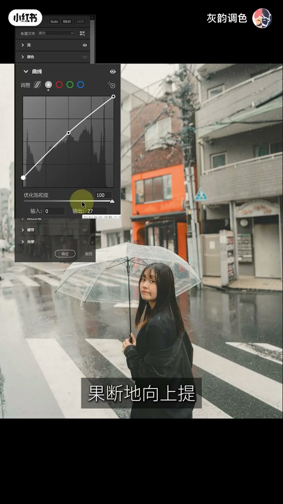
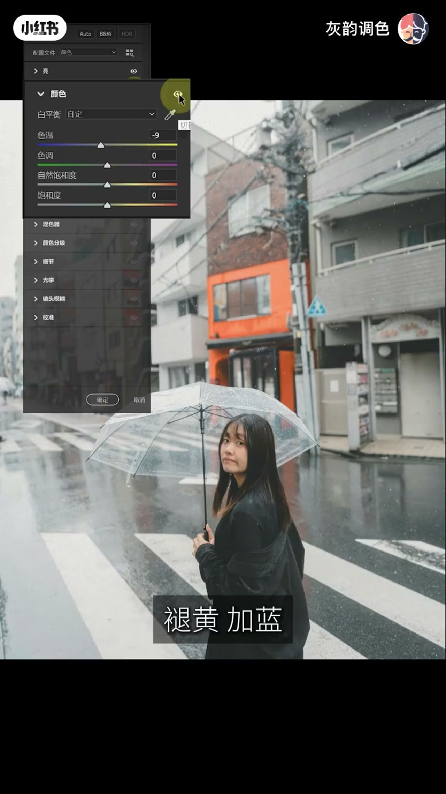
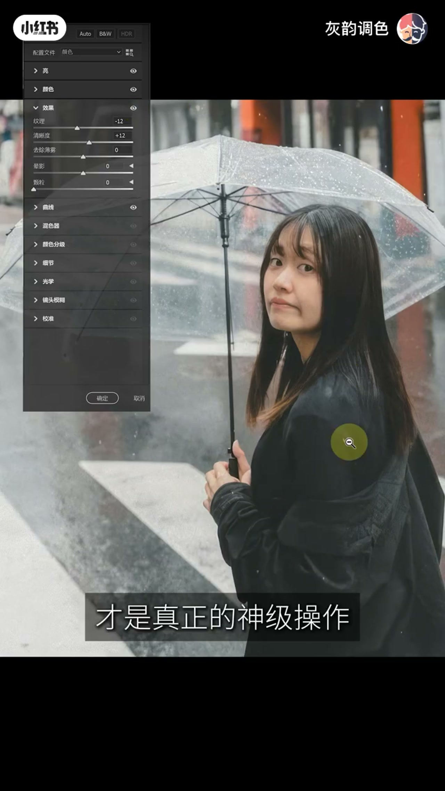
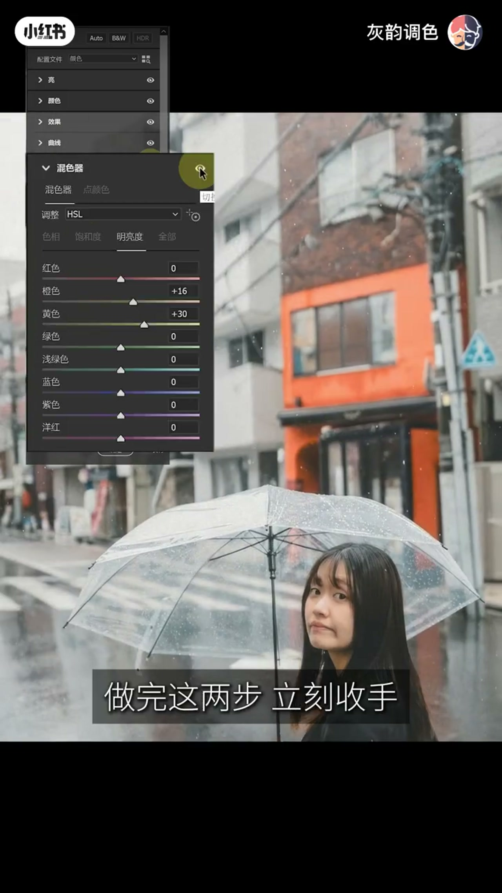
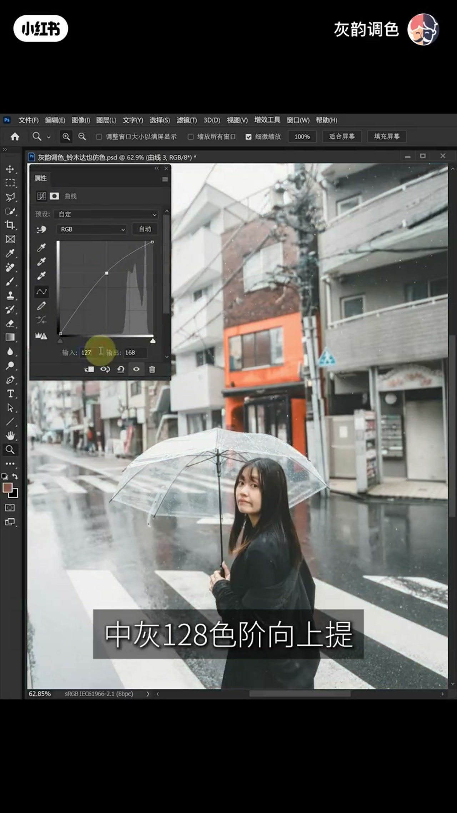
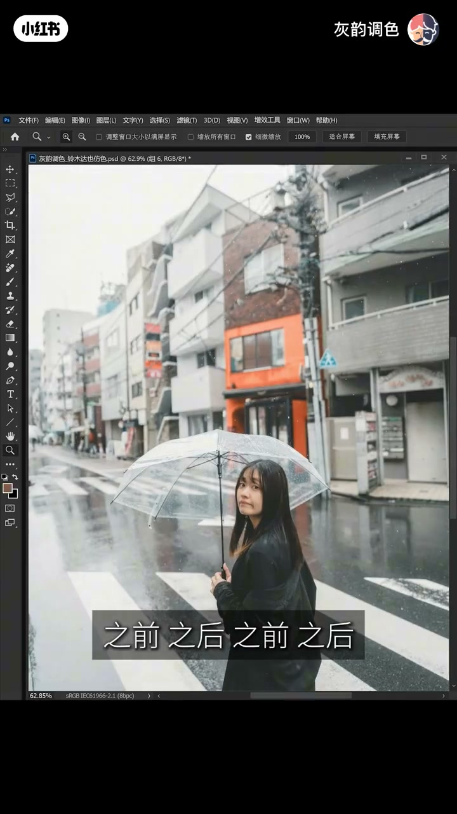
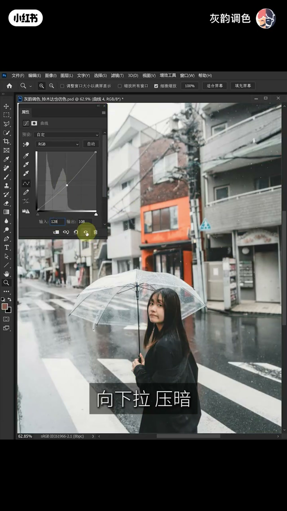
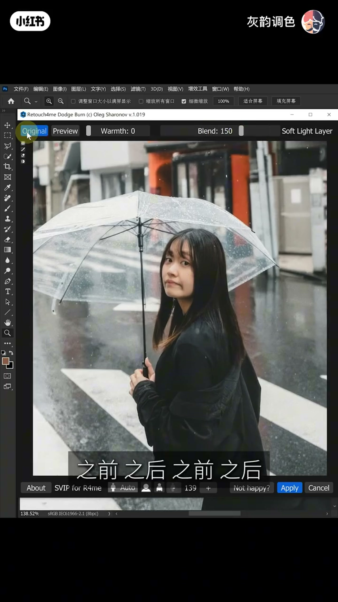
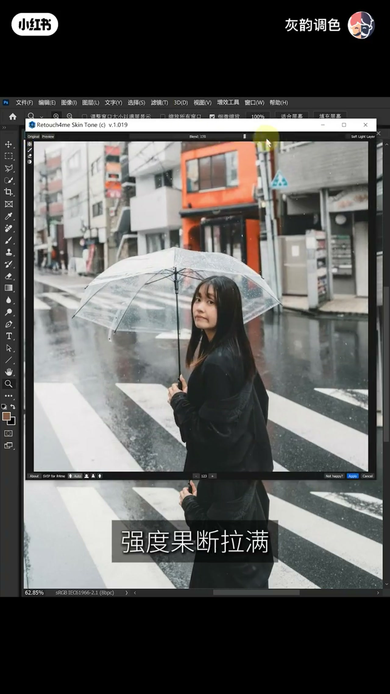

内容要点
整段大约十二分钟，演示素材是同一位撑透明伞的人站在湿斑马线上。前一半在 Camera Raw 风格的基础面板里改影调和颜色，后一半进 Photoshop 做选区和皮肤。片尾转到训练营和评论区领预设，那些话是作者的推广，不是这张图上能核对的参数。
知识结构
作者把发脏定义成无脑降饱和之后杂色和灰调互相污染。他反对压缩光比、硬拉低饱和、在混色器里把颜色抽干，主张先重塑黑白灰。
先把曝光拉高，再压高光和白色、提阴影和黑色，对比度只降一点。01:48 的光面板停在曝光 +0.90、对比度 -14、高光 -27、阴影 +16、白色 -47、黑色 +52。
RGB 曲线在中调打点并向上提，黑场从输入 0 提到输出 27。接着白平衡自定，色温到 -9，色调、自然饱和度、饱和度仍是 0。
效果里纹理 -12、清晰度 +12。混色器只动明亮度：橙色 +16、黄色 +30，其余颜色停在 0。作者说做完这两步就收手。
口播要求用灰度通道做高光和暗部选区，高光曲线向上提、暗部曲线向下压，并用红通道给皮肤做保护。暗部曲线这一帧读数是输入 128、输出 108。文档名是「灰韵调色_铃木达也仿色.psd」。
Retouch4me Dodge Burn 的 Blend 拉到 150，Warmth 为 0。Skin Tone 的 Blend 拉到 100，并要求只作用在皮肤蒙版上。作者承认前后对比可以非常 Subtle。
作者说短视频展不开全部通道细节，评论区回复「日系高级灰」可领预设和动作。结尾把 AI 说成苦力，把创作者的敏感度说成护城河。这是立场，不是可核对的参数。
这套演示的顺序是先整体影调、再局部颜色、再选区拉层次、最后修皮肤。滑块读数只属于这一帧雨天街拍，作者自己也说高级灰不是把画面压平。
00:00–01:15
同样低饱和，脏和纯差在骨架
开场是一张手挡脸的近景，字幕停在「脏是无脑」。作者把两种低饱和并置：一种修出来发脏，一种是他口中的铃木达也。转录里这个名字先后听成「林木达野」「临目打野」「铃木达野」。标题写的是铃木达也，后半段 Photoshop 文件名也是「铃木达也仿色」，正文按这个名字。
他给脏的解释是：无脑降饱和的后遗症，杂色和灰调互相污染，底色混浊。纯则被说成色彩克制，比喻成雨水冲刷过东京街头之后剩下的干净。接着他否定三种常见做法：疯狂压缩光比、强行拉低饱和、在 HSL 里把颜色全部抽干。原话是「真正的高级灰从来不是靠破坏色彩得到的，而是靠重塑黑白灰的骨架」。
预告了四个开关：影调里的动态范围压缩、细节里清晰度的反向拉扯、Photoshop 里的通道计算、肤色里的视觉平衡。转录把「影调」听成「饮料」，把「扒个底朝天」听成「八个底朝天」，按上下文改回。00:55 之后有一段点赞收藏的口播，01:15 才说正式开始。这一段没有可抄的滑块。
01:15–02:00
先把画面抬亮，再把两头拽回灰度
正式操作从一张雨天街拍开始：长发、深色外套、透明伞、湿斑马线，背景有一段橙色墙面和电线杆。作者说新手想要日系高级灰，第一反应是压曝光，生怕一亮就不灰了。他认为前提是先建立很高的明度基准。
01:32 的光面板里，曝光已经到 +0.90，对比度、高光、阴影、白色、黑色都还是 0，字幕说「亮得快要刺眼了」。01:42 高光到 -27，阴影 +16，白色 -47，黑色仍是 0，光标停在黑色滑块上。01:48 黑色也提上来，整栏停在：曝光 +0.90，对比度 -14，高光 -27，阴影 +16，白色 -47，黑色 +52。这和口播一致：高光和白色往下压，阴影和黑色往上提，对比度只降一点。他管这一步叫动态范围压缩，把刺眼高光拽回来，把死黑拉进灰度。
01:55 前后有一帧光面板全部回到 0，像是在切换前后对比，不能当成最终参数。他说只停在这一步，画面依然是平的，影调骨架要等曲线。

02:00–03:21
中调上提，黑场抽离，再褪一点黄
02:07 进入曲线。02:16 左右，RGB 曲线在中间调打了一个点并向上提，面板读数落在输入 128 附近，输出高于 128。不同帧上输出数字对不齐，有的接近 153，有的更高，所以这里只记方向：中调像素被推向更亮，用来给灰画面加一点光感。「优化饱和度」在这些帧上显示 100，口播没有解释这个开关。
接着他找到曲线最底部的黑点，向上提。02:31 的读数是输入 0、输出 27。口播说这一步是抛弃最深的黑，让暗部能呼吸，并比喻成往阴影里灌一层潮湿的空气。基础面板的压缩加上曲线的中调偏移和黑场抽离，被他叫做一套组合拳。02:52 起反复切「之前、之后」，说影调骨架立住了，能闻到雨水味的清冷感。那几秒几乎只有对比切换，没有新滑块。

03:04 他说骨架有了，还差一口鲜气。操作只有色温向左：褪黄、加蓝。03:10 颜色面板白平衡是「自定」，色温 -9，色调 0，自然饱和度 0，饱和度 0。03:13 再次切前后对比。他的判断是暖意被抽走，街头那种夹着雨水的微寒冒出来。色温只动了 9，和前面影调的幅度比，这一步很小。

03:21–04:16
纹理往左，清晰度往右
下一块要同时保留皮肤的软和画面的硬。作者批评两种极端：全盘模糊会肉，疯狂锐化会脏。他的做法是反向拉扯。
03:42 效果面板里纹理先到 -11 左右，03:58 停在 -12，清晰度、去除薄雾、晕影、颗粒都是 0。口播把这一步叫成「AC2 里最高级的原生磨皮法」。界面是 Camera Raw 风格的纹理滑块，不是另一个叫 AC2 的软件；纹理向左会抹平皮肤上的细小起伏，所以他拿它当磨皮。副作用是画面发虚。
04:02 清晰度补到 +12，纹理仍是 -12。他说清晰度撑起柏油路面的反光和建筑线条。转录里的「摆油路面」「少女机」按语境是柏油路面和少女肌。结论句是「柔中带刚」：皮肤软，整体质感扎实。去薄雾、晕影、颗粒从头到尾没动。

04:16–05:09
混色器只提两处明度
04:18 进入混色器。作者说新手会把红黄蓝绿全部乱拉，想生造一种颜色。他只要两次提纯，而且只动明度。
第一处是橙色，口播听成「成色」，面板上就是橙色。04:38 橙色明亮度到 +16，其余为 0。他说阴雨天里发灰的脸会变得白皙。第二处是黄色，对应背景墙面。拖动过程中黄色曾停在 +18 一带，04:54 字幕说「做完这两步立刻收手」时，明亮度是橙色 +16、黄色 +30，红、绿、浅蓝、蓝、紫、洋红都是 0。色相和饱和度这两栏没有被打开讲解。
后面几句把「刀刀致命」「不露痕迹」和「高客单价」绑在一起。高客单价是作者的商业判断，画面上只能核对到这两个滑块。05:04 的「不录痕迹」按上下文是不露痕迹。

05:09–08:13
锁住边界，再在内部拉开明暗
05:11 他先立一条顺序：先整体，后局部。然后推翻「想灰就无底线降对比」。他的说法是，最亮和最暗的边界要锁住，像素不要溢出，同时把画面内部的明暗层次拉开。原话是「灰从来都不是平，而是克制之下的极致张力」。转录里的「光影玻璃」「不易出」按前后文是光影剥离和不要溢出，这两处没有单独的界面文字可对，只作听写校正。
工具换成 Photoshop 的「计算」。口播第一步：合并图层的灰度通道和灰度通道做正片叠底，再让得到的通道跟自己叠加一次，用来把天空、斑马线、雨伞和皮肤上的亮部剥出来。载入高光选区，挂曲线，把中灰 128 向上提。06:06 能看到曲线属性面板和被抬起的 RGB 曲线，文档标签是铃木达也仿色；这一帧的输入输出数字和口播的「128 向上提」不完全停在同一读数上，正文不另写一个输出值。

提亮之后，他说模特脸上的光影跟着扁了。他反对拿画笔在蒙版上擦。口播的保护罩是：再开一次计算，红通道和红通道做叠加，同时勾选两个反向，锁定肤色的核心明暗带；再配合主体反选、填充白色，让背景显示、脸被挡住，然后剔除雨伞，把蒙版载入选区。转录把蒙版听成「猛板」「盲板」。06:40 的计算对话框能确认是红通道对红通道、混合为叠加，反向勾选不一定已经点上，以口播的「同时勾选两个反向」为步骤，不把这一帧当成勾完之后的状态。07:00 画面在之前和之后之间切，字幕比的是皮肤蒙版前后。作者说整体高光通透，皮肤上原来的光影还在。

第二步锚定暗部。口播：仍用灰色通道，混合模式选叠加，并且必须勾选两个反向，锁定地面柏油路和斑驳墙体。载入暗部选区后再挂曲线，中灰 128 向下拉，不去动黑点。理由是区域已经被蒙版锁死，动中灰点能让暗部下沉，过渡还保持柔和。07:38 的曲线属性面板读数是输入 128、输出 108。07:56 又切之前之后。他说明暗被剥开，对比拉开，灰调还在。
这一段里「降维打击」「玩弄于股掌」和「拉开同行差距」是作者的自我评价。能核对的是：软件是 Photoshop，文件名含铃木达也仿色，暗部曲线有 128 到 108 这一下，高光和皮肤蒙版有前后对比。正片叠底那一次的对话框没有单独停在可核对的一帧上。

08:13–10:44
皮肤交给 Retouch4me，变化可以很轻
08:16 进入皮肤。作者反对手工中性灰磨几个小时，改为调用 Retouch4me。转录写成 RetouchSme。08:40 窗口标题是 Retouch4me Dodge Burn，署名 Oleg Sharonov，版本 v.1.019。Blend 显示 150，和口播「果断把数值拉到 150」一致；Warmth 为 0，旁边勾着 Soft Light Layer。底部还有一列约 139 的数字，口播没有解释，不把它写成强度。
切完之前之后，他说脸像注入了光，瑕疵被自动修掉，并强调这不是模糊磨皮，而是在修很细的明暗关系，皮肤纹理还在。窗口底部那列未解释的数字，正文不采用。

09:30 换成 Skin Tone。09:34 窗口标题是 Retouch4me Skin Tone v.1.019，Blend 为 100，字幕是「强度果断拉满」。口播说它修补局部掉色、缺色，把面部细碎的色相和饱和度拉回一条基准，并且要加皮肤蒙版，只影响肤色。09:54 的前后对比被作者自己说成「变化好像并不大，甚至极其微妙」。他用这个微小差别批评「动得越大越厉害」，认为廉价感要在这种像素微差里剥掉。10:40 再切一次前后对比，仍然是同一张街拍，没有新的读数。

10:44–12:08
心法、预设和「人在驾驭工具」
10:44 作者承认这条视频侧重底层心法，通道运算和光影微操没法在几分钟里展开。接着是 100 天调色训练营，以及评论区打「日系高级灰」领取铃木达也预设和相关 Photoshop 动作。预设包本身不在这条成片里，正文不转述包里有哪些数值。
收尾把修图说成按下快门时的温度，而不是冰冷参数。他列了前面那些反直觉：先抬亮再压两头、灰不是平、AI 可以借用。目的被说成在都市里还原一场微寒的秋雨。最后的立场是商业后期永远是人驾驭工具：AI 能做像素平滑和耗时的苦力，但淋不到雨，也不懂人群里的孤独。署名听成「辉韵」，账号名和画面水印是灰韵调色，结尾是「教你用高阶审美变现，我们下期见」。
听写校正只用于正文：铃木达也、影调、扒个底朝天、滑块、纹理所在的 Camera Raw 风格面板、柏油路、橙色、蒙版、不露痕迹、高客单价、Retouch4me、灰韵。文末转录保留 Whisper 原句。